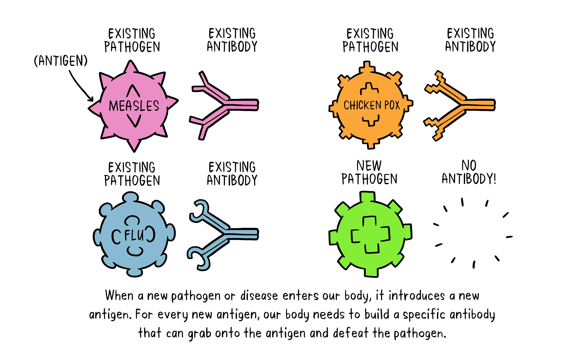

Vaccines
This page explains how vaccines work, the main vaccine types, and how effectiveness is measured.
Key Takeaways
- Vaccines train the immune system to recognize pathogens without causing the full disease
- Immune memory (B cells and T cells) allows the body to respond faster and reduce severe illness
- Different vaccine types (mRNA, viral vector, subunit, inactivated, live-attenuated) use different methods to trigger immunity
- Vaccines undergo rigorous testing to ensure safety and effectiveness before and after approval
- Vaccine effectiveness may decrease over time or with new variants, but protection against severe disease remains strong
What is a Vaccine?
A vaccine is a medical tool that helps the immune system recognize and respond to a pathogen (like a virus) without causing the full disease. This prepares the body to fight the real infection faster in the future. [7]
How Vaccines Work
Vaccines introduce antigens (or instructions to make antigens) so the immune system learns what to attack. After vaccination, the body creates immune memory through B cells (antibodies) and T cells (cell defense). [8]

🧠 Immune Memory
Memory B cells and memory T cells remain in the body after the initial response. If the virus appears later, these memory cells respond quickly—often stopping severe illness before it develops. [8]
🛡️ Antibodies vs T Cells
Antibodies bind to viruses and can block them from entering cells. T cells help coordinate the immune response, and some T cells destroy infected cells to limit viral replication. [9]
Types of Vaccines
Different vaccine platforms deliver antigens in different ways. Each type has strengths and limitations depending on the virus and the population being vaccinated. [10]
💉 mRNA Vaccines
mRNA vaccines provide genetic instructions that tell cells to make a harmless viral protein (an antigen). The immune system then builds a response to that antigen. [10]
🧬 Viral Vector Vaccines
Viral vector vaccines use a harmless virus (the vector) to deliver genetic material for a viral antigen into cells, triggering an immune response. [10]
🧪 Protein Subunit Vaccines
Protein subunit vaccines contain purified pieces of the virus (often proteins). Because they do not contain the whole virus, they often require adjuvants or multiple doses to strengthen immunity. [11]
🦠 Inactivated Vaccines
Inactivated vaccines contain virus particles that have been killed so they cannot replicate. They still expose the immune system to viral antigens. [10]
🧫 Live-Attenuated Vaccines
Live-attenuated vaccines use a weakened form of the virus that can replicate a little without causing serious disease in healthy people. This often produces strong, long-lasting immunity. [10]
Comparison of Vaccine Types
| Vaccine Type | What It Contains | Main Advantage | Limitation |
|---|---|---|---|
| mRNA | mRNA instructions to make a viral protein | Fast to design and update | Requires cold storage |
| Viral Vector | Harmless virus carrying antigen genes | Strong immune response | Pre-existing immunity to vector |
| Protein Subunit | Purified viral proteins | Cannot replicate or cause disease | May require boosters or adjuvants |
| Inactivated | Killed virus particles | Stable and well-established method | Weaker immune response |
| Live-Attenuated | Weakened live virus | Long-lasting immunity | Not suitable for immunocompromised individuals |
Comparison adapted from standard immunology and virology sources. [10]
Vaccine Development and Testing
Vaccines go through multiple stages of testing to evaluate safety, dosage, and effectiveness before approval. Even after approval, monitoring systems track side effects and long-term performance. [12]
🧪 Preclinical
Early lab and animal studies help determine whether a vaccine candidate produces an immune response and appears safe enough to test in humans. [12]
👥 Clinical Trials (Phase I–III)
Phase I trials focus on safety in a small group. Phase II expands testing for dosage and immune response. Phase III measures how well the vaccine prevents disease in large populations. [12]
✅ Approval & Monitoring
Regulatory agencies review trial results before approval. After rollout, ongoing surveillance detects rare side effects and tracks real-world effectiveness. [12]
Understanding Vaccine Effectiveness
Vaccine effectiveness describes how well a vaccine reduces a specific outcome (infection, hospitalization, or death) in real-world conditions. Effectiveness can change over time due to waning immunity and viral evolution. [13]
📉 Why Effectiveness Changes
Immunity may decrease over time, and viruses can mutate into new variants that partially evade immune recognition. Booster doses can restore protection by strengthening immune memory. [13]
📌 Key Point
Even when protection against infection drops, vaccines often continue to provide strong protection against severe disease and death. [13]
🌍 Why Vaccines Matter
Vaccination reduces the spread and severity of viral diseases, protecting both individuals and communities. High vaccination coverage can limit outbreaks and reduce pressure on healthcare systems. [14]
🛡️ Community Protection
When many people are immune, viruses have fewer opportunities to spread, indirectly protecting individuals who cannot be vaccinated. [14]
Common Misconceptions
Myth: “Vaccines are 100% effective.”
No vaccine provides perfect protection. The main public health goal is reducing severe illness, hospitalization, and death. [15]
Why do some people still get infected after vaccination?
Breakthrough infections can occur, especially when a virus evolves or immunity wanes. However, vaccinated people are usually less likely to experience severe outcomes. [15]